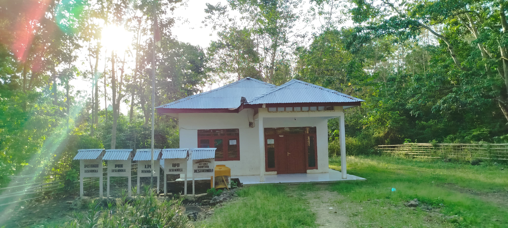

Visi
Bekerja Keras dan Bekerja Ikhlas Bersama-sama Masyarakat untuk Membangun Desa di Berbagai Bidang Pembangunan Demi Kemajuan Bersama.
Misi
Untuk mewujudkan visi tersebut, ditetapkan misi sebagai berikut:
- Menciptakan Pemerintah Desa yang cepat tanggap terhadap keadaan dan aspirasi masyarakat dengan terjun langsung melihat kondisi masyarakat di seluruh wilayah Desa Manola.
- Meningkatkan pelayanan bidang pendidikan, melalui bantuan beasiswa bagi anak kurang mampu khususnya di perguruan tinggi.
- Meningkatkan pelayanan kesehatan masyarakat, melalui pemberian makanan tambahan dan bergizi bagi ibu hamil, balita, anak kurang gizi/stunting, dan lansia serta pelayanan umum lainnya.
- Peningkatan pelayanan sarana dan prasarana umum desa, meliputi: kesehatan, pendidikan, penerangan, pengairan, serta sarana prasarana jalan lingkungan dan jalan tani.
- Pembangunan rumah layak huni bagi masyarakat yang kurang mampu.
- Pemberdayaan Ekonomi Masyarakat dibidang Pertanian,Perkebunan,Peternakan,Perikanan,Pandai Besi,Bengkel,Tenun,dan Pertukangan.
- Pembentukkan BUMDES(Badan Usaha Milik Desa) dan PengurusBUMDES di Desa Manola.
- Peningkatan Pelayanan dibidang Kepemudaan dan Karang Taruna Desa melalui Seni Budaya dan Olahraga.
- Peningkatan Pelayanan Ketertiban dan Keamanan bagi masyarakat Desa Manola.
